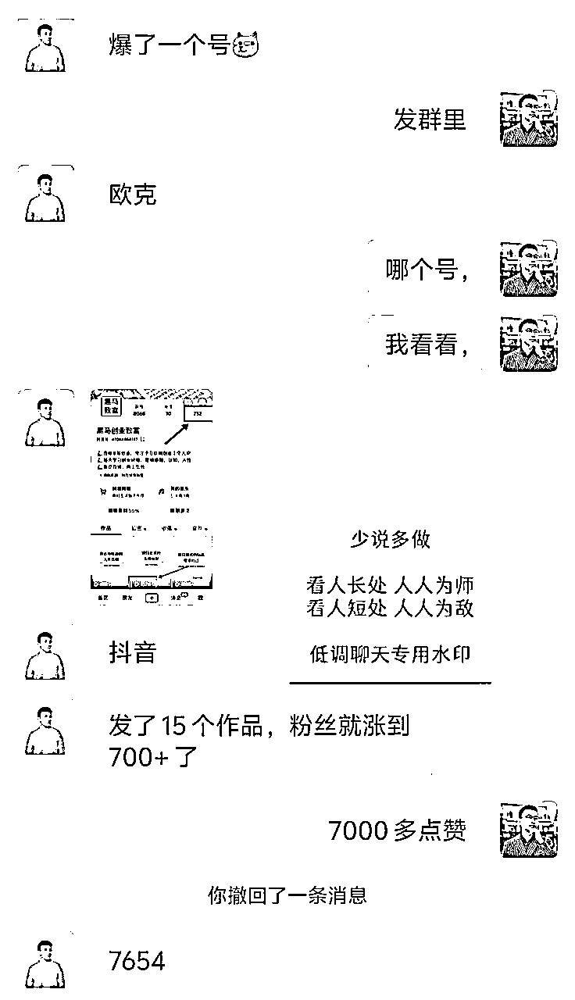
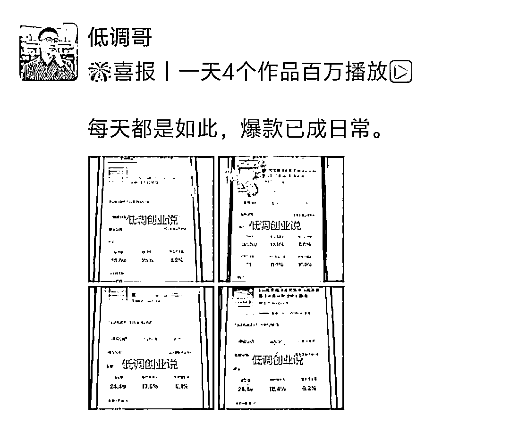
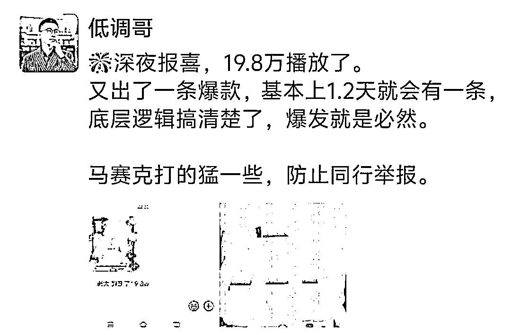
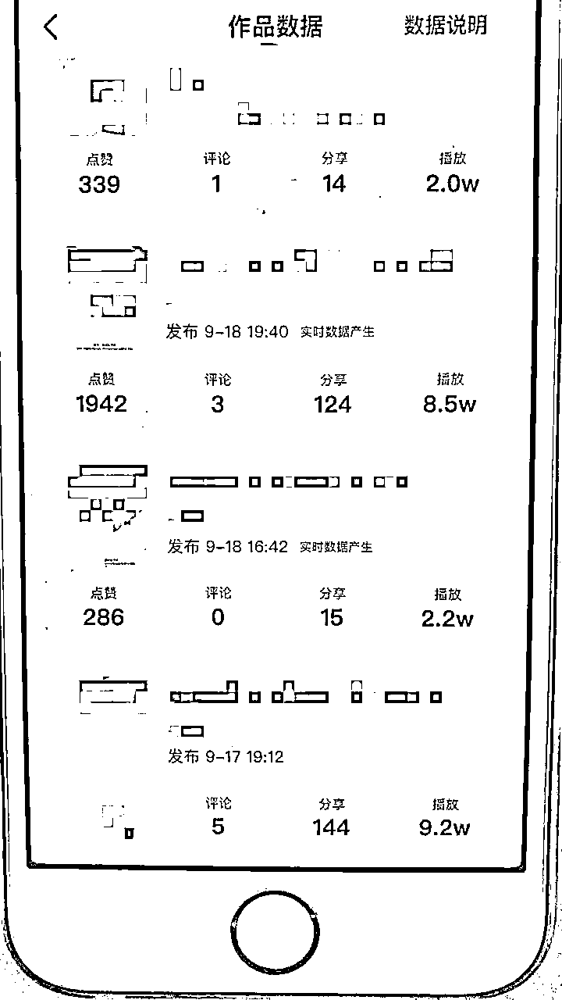
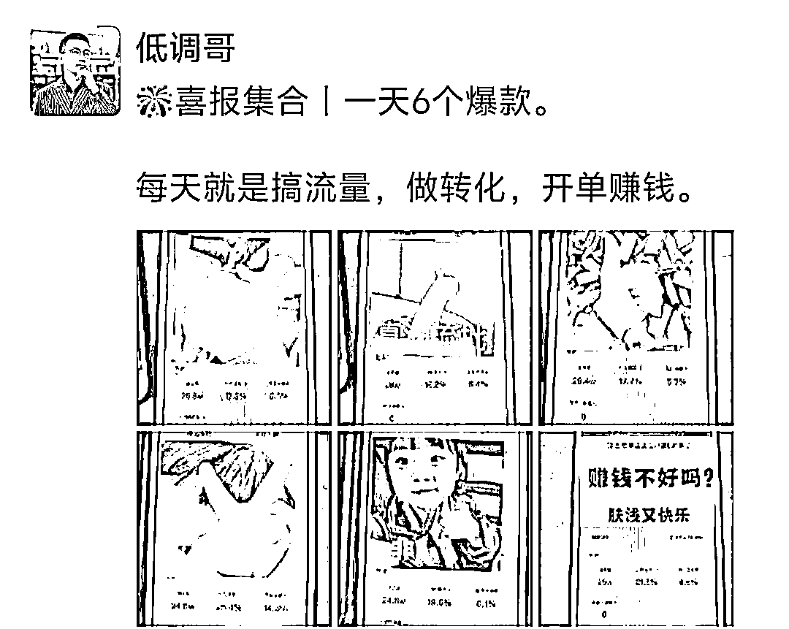
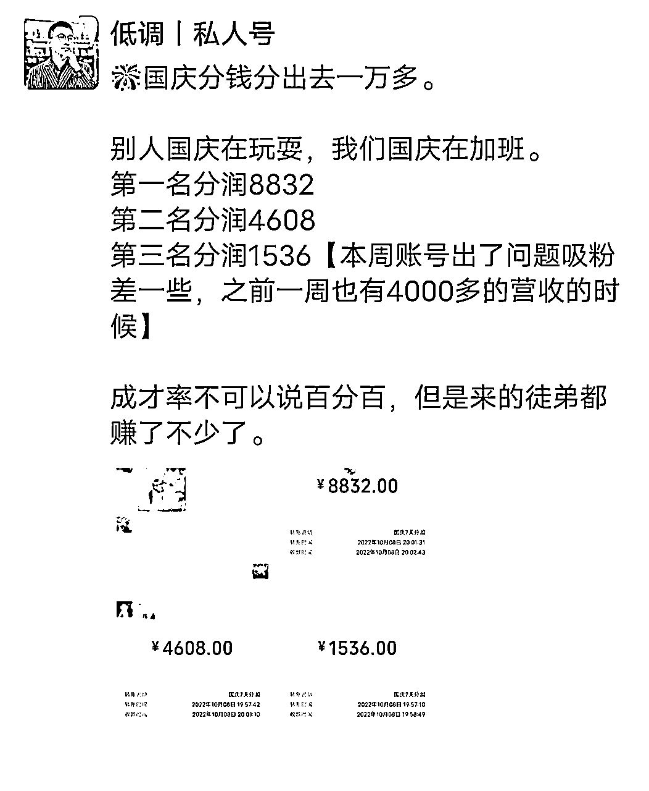
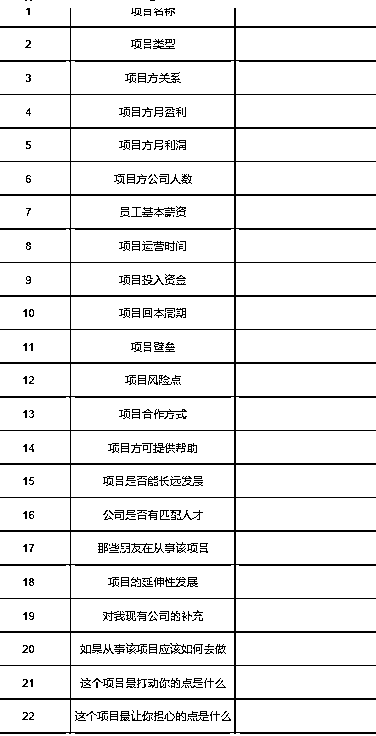

来源：https://ryrl4oi6gq.feishu.cn/docx/JxBDdWGszo2M4PxGYCOciEynnkc
此模式适用于大多数个体创业者向团队进行过渡。
极度适合超级个体IP创业者进行项目化，团队化经营。
本文深度给大家拆解，
一、低调团队从1-40人发展历程
二、门徒模式的深度筛选条件
三、手把手教你搭建裂变式团队【从0-100人模式】
四、裂变式创业模式发展的困难点
五、裂变式创业模式未来发展分析
本文写了8000+字详细的给大家深度复盘。
对于目前想要团队搭建和快速实现公司规模化放的朋友，可以深度阅读。
（内容目录截图）
低调目前两家公司，杭州公司10+，秦皇岛公司人员30+，采取的都是门徒模式裂变式创业。
秦皇岛公司从事私域相关业务，杭州公司从事小红书培训，IP孵化等相关业务。
我是2022年7月份有了门徒模式做项目的想法，
我是创业小博主，公众号粉丝2万多人，私域2万多人。
是什么让我产生了做门徒模式的想法。2021-2022年我们从事拼多多电商，做了小3000+店铺，平台风控，项目倒闭。
我从湖南回到了河北秦皇岛，创业这么多年，不可能闲下来的。
机缘巧合我看到了抖音图文的引流模式，我线上安排我徒弟进行测试。
结果没几天一个作品爆了。

这个时候我敏感的意识到这是个不错的机会，于是和我这个徒弟说，你来秦皇岛和我一起做事吧。
当时我租了个场地，没有人，就我一个人，我的想法是项目测试好，招聘员工。
想了想不如先招募几个徒弟来进行测试，这样效果可能会更好。
我从粉丝当中筛选了4个徒弟，到了秦皇岛，开始测试项目。
这四个徒弟都是之前给我付过费，对我深度认可的人。
然后开始测试短视频的方法论，我们基本上打爆了几个平台。




抖音


小红书

视频号
这个过程中，从1个徒弟慢慢的到了10个徒弟。

阿米巴团队跑到半年的时候，一定会有一波危机，大多数团队都是死在了这个危机当中。
不是赚不到钱大家疲惫了，是枯燥的重复。
大多数徒弟们跟着我还是赚到钱了。


（图就不多晒了，有营销嫌疑）
但是，有些人是耐不住寂寞的，因为天天这么干，一般人熬不住。
我们是早上9点半，一直忙到晚上 10点，11点，每周休息1天，很多时候，基本都不休息。
大多数人，哪怕赚钱也进入了疲劳期。
其次流量波动，大家获取流量出现了大问题。
有些徒弟就说想要走了，于是接二连三的门徒离开。
第一批徒弟，最后只剩下了下了一个人，也是最初最早跟随我的人。
基本上大多数阿米巴团队，到这个阶段就宣布结束了，
从4-7月这三个月，是我最灰暗的三个月。
门徒们挨个离开，业务进行不下去，当时租的房子也要到期了。
总之，一切都是悲观的，我那时候深深地质疑自己。
但是创业这么久了，不可能认输的，我从新设计了一套新的架构，开始了新的测试。
新的模式，我称之为项目工厂模式。
1、筛选项目：利用自己的人脉资源，筛选身边的靠谱好项目。
2、项目测试：通过门徒阿米巴模式进行项目测试。
3、项目直营：测试成功的项目立马进入放大直营，实现项目最大化经营。
4、项目加盟：对于跑成功且利润可观的项目，进行项目招商线下学习。
5、开分公司：稳定持续盈利的项目给阿米巴成员实现分公司运营。
然后我重新开始招募了新的门徒，这次我招募了7个人加入，我准备了身边好朋友的三个项目进行测试。
深度测试，三个月，我们跑通了，家电团购项目。
然后安排门徒分组进行测试，赛马模式。
三个月时间从0到了月收益10万+。
为什么门徒会走，因为一直是一个人做事，做的久了，累了自然疲惫。
如何让门徒赚的更多，还不会那么匹配，给门徒招募员工。
于是我们从去年的12月份开始，进入了新的模式阶段。
给门徒招聘员工，让门徒脱离一线执行层，到二线管理层。
同时采取小组模式，门徒成为组长，员工是组员，小组之间竞争。
秦皇岛目前这个模式跑的很顺畅，员工目前有了20+。

秦皇岛团队模式进入正轨，我选择了更高难度的挑战，我去杭州开了个新公司。
杭州公司和我徒弟合作，她去年在做小红书IP孵化，去年做了小百万的业绩。
然后我把我这套模式复制给她，然后安排她进行招募门徒，一样的模式复制。
我也招募了一些门徒来到杭州，把模式进行平移。
目前杭州团队人员10+。
模式很简单：
提供给门徒流量方法论，门徒们按照我们的方法去做内容，获取流量，流量获取之后，微信进行成交。
成交的产品不同，提成不同，无任何底薪，全是提成模式。
后续我们会切一些细分的项目盘，然后培养门徒成为项目负责人，然后配备员工。
如果杭州成本较高，有些项目直接落地秦皇岛。
秦皇岛公司成了项目孵化中心，测试项目。孵化项目。
杭州公司成了品牌运营中心，对接资源，扩大IP影响力。
上面的篇幅，我是特意少写一些，让大家有个直观认识，下面的内容才是更重点的内容。
门徒：其实就是徒弟，我们做的就是师徒制度。
为什么不是合伙人模式。合伙人是平级的。
师徒增加了更多的牵绊，也多了一层感情纽带。
虽然我和他们的年龄差不多，但是内心需要他们的深度认可。
我是筛选模式：付费+线下+线上面试
而且我收费的标准还不低，9980。
付费：代表投票，代表对你的认可，以及他的决心，
线下：我很多徒弟疫情的时候都跑过来，隔离什么的都遇到了，是真的深度认可，才会来到河北秦皇岛。这个北方小城。线上不要去考虑，很难出结果，线上协作是个伪命题
我筛选的条件很多：
①年龄要求：30岁以下，男女不限。
②线下办公：全职，常驻河北秦皇岛/浙江杭州，不接受兼职，不接受线上。
③资历要求：有一定的互联网项目基础。
④身体健康：无重大疾病，体重超过200斤的不要。
⑤吃苦耐劳：一天在项目上的时间是早9-晚9。12个小时在公司，熬不住的不要。
⑥执行力强：执行力差，玻璃心脆弱的不要来，公司不哄孩子。
⑦性格温和：性格偏激喜欢歪理邪说的不要，以自我为中心的不要。
⑧财务良好：有重大负债的不要，心态有很大的问题。
其次，生活自理，吃住自己安排。
中国师徒模式做的比较好的两个：德云社+东北民间艺术团。我们要学习这些前辈的经验。
这里面有个深度争议的点：无底薪。
很多人认为门徒模式是付费打工，是变相的压榨，的确圈内很多人讨论过这个话题。
其实我们就是深度筛选合适的人，而且也不是说我们要数量，我们要的是质量。
门徒模式，注重质量而不是数量，一个优秀的门徒能给你扛起来一个百万以上的项目。
我们需要的是合格有创业底子的人，而不是一个妈宝男，也不是一个只看中当下利益的人。
所以条件门槛越高，你才能筛选出优秀的人才。
你的发心：你未来要把他培养成年入百万的门徒，项目的负责人。
他的初心：我希望少走弯路，快速用三年的时间成长起来。
这个时代个体创业很难，现在都是阵地战。之前我记得在圈内看到过这样的一个内容。

创业很多事暗知识，是口口相传，你去回想下，你公司这一路做起来一定是某个大哥给了你管理框架，或者是问了多个大哥，你才具备了这个能力。
所以我吸引来的人，也是真的想和我学习本事的人，不是为了单纯的赚钱来加入你的团队。
他们看的更重要的是未来，是如何真正的学会公司化的管理和运作。
个体创业我希望你真的找个大哥，跟一跟，不要自己一个人做犟种。
不公司化，很难做出大结果，想要公司化，这其中有无数的坑需要踩。
创业路上的很多知识，是你书本上买不到的，比如很多人加了生财，感觉好像是百科全书，其实就是如此。
古代学艺三年，要给师傅白干三年活的，哪个成功的人不是一路荆棘密布的走过来的，不要只看眼前的利益。
今年我们团队年入50万以上的徒弟不会少于5人，我们秦皇岛团队的项目主管，一个是01的，一个是02的。
①项目准备
首先你要有个盈利的业务模型，月收益在2万左右。
项目最好有一定的小壁垒，没有也无所谓。
其次项目具备一定的可复制性，以及项目阳光正规。
②场地准备
你要有个办公场地，前期100平足够。
③粉丝基础
你要有一定的粉丝基础，大家对你有一定的认可度
哪怕你不是做IP的也无所谓，但是你的朋友圈打造的很好，大家愿意支持和认可你。
这是三个必要条件，缺一不可。
①写一篇自我介绍：
注册公众号写一篇自我创业经历文章，让大家对你有个充分了解。
文章中最好提及一下目前在做的项目，
这篇文章写出去，一般反应都蛮不错的，大多数人都会点赞。
②更新创业进展，创建围观群。
可以在朋友圈更新自己的创业进展，或者是创建个围观群，进行展示。
③门徒招募文。
前面的都是铺垫，写出自己的招募计划。
文章结构：
我是谁
我在做什么
我未来的规划
我需要什么人加入
筛选条件
这其中很多小伙伴对收费这一块，肯定有一定的疑问。
给大家出几个方案参考。
丨押金模式
预付XXX元，多久没出结果，退还。
出了结果，每个月退还多少钱，比如收费1万，每个月退1000元。
丨收费模式
直接收费XXX元，按照自己的粉丝受众定价，建议不低于5000元。
丨分期模式
先付XXX元，赚钱后付XXX元。
④直播售卖
直播是最好的宣传形式，直观，具体
然后门徒到了迎接，吃饭，协助找住宿，这些就不展开说了，成年人都懂。
①心态建设
你先要做个心理建设，可能刚招募门徒进来，你自己心理有点小紧张，不知道如何交往，不知道如何安排任务。
首先明确，师徒模式，我们就需要按照徒弟的标准去要求他，他来找你，你就是有他认可的内容，所以你就认真去带，认真去教。
②执行SOP
所有门徒进来，你必须有完整的培训方案，或者是你亲自手把手的去带。
最好是制定出标准化的项目SOP，来一个教一个这个模式太慢了。
对于一些操作比较难的环节，要把视频录制清楚。
我身边很多朋友复制我这个模式，都跑的变形了，无一例外，出错在这个地方。
没有规矩，认为徒弟来了，告诉做事就好了，不抓考勤，不抓管理。
慢慢的懈怠了，徒弟也不听话，自己也懈怠了。
我们公司为什么一直战斗力很强，来了必须定规矩。
①日报制度
每天必须写日报，日复一日的去写，每日自我复盘。
②考勤制度
严格考勤，不能迟到，不能早退，有事提前请假。
③周会制度
每周固定周会，去执行，去推进本周任务。
每周的周计划推进表
④乐捐制度
不写日报，迟到，违反公司规定，等等事项。
自己主动乐捐（罚款）
这个钱用来公司团建等使用。
我现在能做到每天中午到公司，其次我离开秦皇岛公司一个月照常运转，就是我们基础的框架和监管做的很好。
从进来就确定了规矩，大家都执行这个规矩。
线下是个场，什么氛围培养什么人，一个懈怠松散的团队，是没有任何战斗力的。
门徒分钱不要月度去分，我们都是周去分钱，当然看业务类型。
比如我们杭州团队这种，肯定是周去分钱，尤其是前期的时候
需要让徒弟看到希望，所以周去分钱更容易接受
其次分钱制度一碗水端平，所有人一样多。
但是要有一定的阶梯模式，晋升模式。
门徒模式最难得就是前三个月，
这个三个月分为三个阶段：
第一个月：业务培训期：这个阶段需要验证的一个点，那就是你的方法有效，取得一些为效果。
第二个月：业务培养期：这个阶段什么人能跑出来，你心里多半有个想法，那么需要深度培养标杆。
其次对于一些基础差的，需要深度辅导，让其下苦功夫，
第三个月：业务发展期：这个阶段标杆出来了，基本上业务也进入了成型阶段，大家也看到了旗帜。
这个阶段还是招募阿米巴人员。
晒自己的标杆，晒自己的案例，晒自己的业务。
吸引更多的人加入，招募更优秀的人才加入。
这个阶段就是多晒朋友圈，多记录身边人的成长。
总之0-10这个阶段是超级简单的，一般第二次招募就能达到这个数值。
真正最难得是这个阶段，因为这个阶段需要加自营。
为什么我采用了门徒+自营的模式。
因为门徒哪怕走了。我们业务不会停止运营。而且后续新的门徒可以直接顶上去，接手他的员工。
其次门徒模式把利润分出去了很多。自营模式可以实现利润最大化、
但是在开展自营模式之前，还是需要做一些基础准备
①核心门徒：业绩出色门徒3人
②场地准备：容纳30人的场地
③设备准备：手机，电脑，桌椅板凳，等等。
④项目SOP：傻瓜式教学SOP，小白入门版SOP，视频化，图文化。
⑤财务监管：所有的入账一定是从你这里，
⑥薪资标准：制定好薪资标准框架
三线是福地，工资3000+随便招聘，其实我们的业务没想的那么复杂，三线城市的人员一样做的起来。
最核心的还是中层人员的缺乏。
⑦人事招聘：如果想快速上人要有HR
我们现在的HR就不错，10多天招募了100+的面试人员。

⑧人员分组：给门徒安排任务，员工分组，员工培训。
我们现在都是HR 和门徒一起面试，然后门徒们分配员工，然后安排集中培训。
⑨深度筛选：
员工要深度筛选，不要有培养思维，
我们为什么招聘那么多，因为我们需要深度筛选，不合适直接就劝退了。
基本上三个月筛选下来，公司30人就可以达到。
①复制思维
这个阶段其实就是复制思维，你需要在开拓个新项目，然后从老门徒当中筛选1-2个负责的人进行测试。
然后测试成功，继续复制，按照10-30人的模式重新来一遍。
②项目筛选
其次多个项目的选择不是盲目选择，去年这个阶段我踩了很大的坑。
我们每个人的能力半径就那么大，我们要选择我们看得懂的项目。
其次选择有积累性的项目，秦皇岛我未来的布局就是私域项目。
杭州团队布局的就是培训和IP相关的业务。
因为这两个是我比较熟悉的领域。
去年我安排门徒测试了很多项目，失败了很多。
所以我特意还自己制定了个表格，深度的去筛选项目。

不能胡乱下决策，尤其是公司在扩张阶段，这个时候需要绝对的谨慎。
更不能胡乱的加项目，每加一个项目，我们都需要深度决策，和门徒们多开会沟通。
这个地方是我这一年多踩坑最多的地方。
③组织文化
公司到了30人以上一定要明确你们的组织文化，如果你不去明确，那么你的团队一定会出很大的问题。
我今年开年就定下了公司的企业文化。
企业文化不是空话，是真正可以落地下去的，建议大家参考海参哥公司的企业文化。
极度简单，极度好用。
④员工体系
员工日常的管理体系，我们现在也设计好了，采取积分制管理，日常工作行为换取积分，积分兑换假期，金钱等。
以及员工的晋升体系：我们公司采取的是双通道模式，专业晋升和职位晋升。做过公司的基本都懂。
⑤监管体系
这个阶段公司需要财务，人事，行政，以及，公司内部需要有绝对靠谱的自己人。
尤其要监管好财务体系，人多了不代表利润就上去了，需要时刻关注项目波动情况。
门徒模式厉害的点其实在这个阶段已经出来了。
你会发现，你不需要深度参与管理，
业务上他们可以开拓创新，
管理上他们会监管员工
财务上我们进行深度把控，
目前我们秦皇岛团队也就进入了这个状态，我不需要深度参与管理。
每个月我只需要和他们算算账，分分钱，现在这个事情我也打算安排个核心人员进行负责。
真正的实现了自动化运作，而且高速发展。
很多人很喜欢这个模式，但是很难招募到合适的门徒。
门徒一半在筛选，一半在培养。谁都找不到绝对符合心意的人
所以不要有一种伯乐相马的心态，给他们足够的成长空间。
这个问题我遇到过不止一次，尤其是00后，个性很强。
首先你要明确你的底线，那些是不能触碰的
其次你要明确你可以妥协的点，那些是可以妥协的。
当你明确了这些问题之后，你就轻松了很多。
我们要眼睛容得下沙子，能力强的人，一定有性格。
小绵羊没有性格，但是这种人你没办法开拓创新。
我朋友的确用这个模式出过问题，但是主要是他不会管理。
首先你要线上严格筛选，不合适的人不要加入到团队当中。
如果你只收钱，什么人都进来，你这个不是门徒模式，你是招商模式。
你把这个当成了盈利项目，那你一定会出问题。
他们大老远找到你，家庭的支持很重要，我每次都问他们家里的支持情况。
而且重要节日，我都会给他们父母买东西。让他们家中放心。
其次关注他的情绪情况，有问题及时沟通。
大多数人三个月就很快的进入了疲劳期
不是他赚了多少钱，就不会疲劳。
是他做事太久了，想休息了
适当的进行团建，带他们去玩，或者是出去喝酒。
其次聊天进行心理疏导
以及确定新的目标，定下更高的目标。
很多时候为什么疲劳，是没有了新的目标。
为什么我们现在采取门徒+自营模式。
因为大家都会进入疲劳期，让员工做事，他就可以适当的闲下来，没那么累了。
人才不同阶段的用途是不同的。
对于一些真的想走的，就是说什么都没有效果的，还是让提前走，要不然留下来会破坏整个团队氛围。
会带走你的一片人。
有IP影响力的博主，最适合这个模式。
无论是帮助你去做销售，还是去做流量，以及去做项目，都很适合。
其次有稳定项目的老板，希望实现低成本运作。
最好是流量型的项目团队，特别合适。
平台型的团队不是不适合，是很容易平台波动崩盘。
做公司越做越累，做模式越做越轻松。
低调这一路不断地探索，历经1年半我也走出了属于我的自己得创业发展模式。
1.0：IP＋项目＋门徒
通过IP挖掘出身边合适的项目，然后通过招募门徒进行测试，把项目快速测试成功，然后进行放大。
这个阶段有两个难点：
①筛选到合适的门徒：
执行力强，认可度高，能扛能打，思维性好。
先后我招募了很多门徒，真正符合这几点的少之又少，千金易得，一将难求。
这样的门徒不需要多2-3个就可以把一个项目跑通。
②筛选到合适的项目
去年我们测试了不少的项目，但是失败居多，我是深度的进行复盘的。
甚至今年为了筛选项目，我特意做了一个表格，接下来的项目选择按照表格去理性分析，再进行研发。
合适的项目和合适的人才，两者相辅相成。
不过目前针对于团队我心中有了大概的项目适合的模型，而且随着现有项目的不断放大，也会不断地筛选同类型的项目进行迭代。
目前看好的几条线路：
私域线路：长期不断地屯私域，增加自己的管道收入。
积累线路：找到可持续，可积累的项目。
培训线路：围绕IP，进行课程研发，和不断地扩充IP私域。
2.0：项目＋门徒＋直营
我们和外面的门徒机制不同之处在于，我们给门徒配备员工。
任何人做项目都有疲劳期，随着门徒实力的提升，会给招募员工，进行业务放大，从业务层过渡到管理层， 而且门徒的收入会呈现直线上升。
这个阶段门徒是赚大头，我赚小头。
这种模式是圈内很少有人敢去做的，因为需要极强的管理能力和对业务的要求也很高。
3.0：加盟＋分公司
这一步目前还没去做，目前有这个想法，把我们成熟的模式，进行复制，项目工厂现在不是落地杭州开新的公司，后续有想法的朋友可以聊合作。
我做的是小组模式，重心还是抓门徒，我推崇的管理方案是自动化管理。
公司的整套管理架构，我做好之后，需要的是自动运转，而不是我是一个救火队员。
结果导向，这个员工不合适亏的是门徒的钱，他自己会优化掉。
他比我了解业务，他自己知道该招募什么属性的人，我需要做是引导他如何做好管理。同时管理我信奉的是无为，我不过多干预，从结果导向出发即可。
抓好门徒的管理管好财务情况，更多的给他们更大的舞台。
我为什么践行现在这个模式，因为我看到了两个成功案例。
①螃蟹王国
②海参
这两个人是给我启发最大的两个人。
我们公司今年达到50-100的规模问题不是很大，月营收百万也是迟早的事情。
三个优秀门徒+一个好项目=30人的团队。
这个模式真的厉害的点，很多老板其实可能没看懂，是复制能力。
其次这个模式可以让我们实现自动化管理，我们可以无限控盘。
为什么你赚不到那么多钱，因为你的时间和精力有限，你只能一个人做好一件事。
无限复制，无限上量，这才是我们需要深度思考的模式。
100人的员工=1000万利润
1000个员工=1亿利润
这是一个不可逆的规律，适用于大多数行业。
海参为什么能短时间公司做到了千人，背后就是他背后的门徒阿米巴模式，所以甩开了那么做自营的博主。
所以组织的机动性和复制性，在一个红利市场面前格外的重要。
现在是阵地战的时代，不是小米加步枪游击战，所以谁的阵地足够大，谁的优势足够强。
本篇文章希望给各位老板一定的启发，大家可以评论区留言，看到会给大家进行回复。
后续可以针对于大家的提问，再出一篇答疑贴。
拓展阅读【龙珠文章】
①商业顶层设计：从百万到千万:
https://wx.zsxq.com/dweb2/index/topic_detail/412511251481528
②如何做个高效率且赚钱的 IP？
https://wx.zsxq.com/dweb2/index/topic_detail/415581554228228
③极简致富创业思考（看懂少走10年弯路）
https://wx.zsxq.com/dweb2/index/topic_detail/585244142288214
④5人团队20万起盘一年翻15倍，每月持续盈利30万+背后的项目操盘拆解。
https://wx.zsxq.com/dweb2/index/topic_detail/418524181584588
⑤资深创业老司机传授抱大腿方法论
https://wx.zsxq.com/dweb2/index/topic_detail/582282125424214